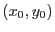
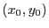

When radiusstyle=`contour', the task calculates the source region shape as an elliptical locus which approximates the contour of the PSF at a given flux value. The procedure uses an analytical model of the PSF which has the following form:
where  ,
,  ,
,  and
and  depend on the source position in the FOV. The
depend on the source position in the FOV. The  coordinate system employed here is transformed into DETXY by addition of
followed by rotation through an angle
where  is the centre of the source in DETXY.
coordinate system employed here is transformed into DETXY by addition of
followed by rotation through an angle
where  is the centre of the source in DETXY.
Flux contours of the model given above have elliptical shapes. Clearly, in order to calculate the shape of such a flux contour, it is necessary firstly to normalize the PSF to the source brightness and secondly to determine the flux level (in `brightness' units per pixel) at which to find the contour. Note that the units must be compatible: if the source brightness is specified as total counts, for example, then the flux level must be in counts per pixel.
Ideally the source brightness would be specified by allowing the user to supply (via a command-line parameter) the name of the column of the source list which contains such information. However this facility is not yet in place: at present the task is `hard-wired' to look for source brightness in a column of the source list named SCTS. If there is no column of this name in the source list then the radiusstyle=`contour' style cannot be used.
Matters are more flexible as far as specifying the flux level is concerned. The flux level is given in terms of a local background flux level and a multiplying constant. There are several ways in which the user can specify the first of these, the selection being governed by parameter bkgratestyle. The multiplying constant is specified via parameter bkgfraction.
bkgratestyle will eventually provide four choices (`col', `kwdset', `image' and `user') but at present this functionality is only partially realized and the only choices the task will accept are `col' or `user'. These are described as follows:
Notes: